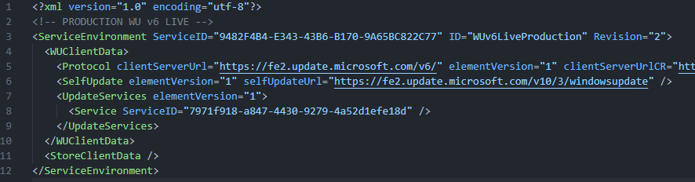

windows 8.x store revival?
so I was just using mitmproxy to look for more stuff to revive, and I found that the store requests one URL that is supposed to return URLs for certain resources the store uses.
It's an SLS (Service Locator Service) endpoint. The file it downloads is a CAB titled "environment". It used to serve actual client data for the Store, but what is returns is quite different:
Notice that? StoreClientData isn't gone, just... empty.
Now, there is a different GUID for the SLS URL, but they aren't compatible, and the store requires the SLS cab to be signed by Microsoft (something I can't do).
I tried to copy the StoreClientData from the other GUID, but that invalidated the signature.
You could say I could just patch the EXE to skip signature verification, but that doesn't seem very legal.
I also tried a self-signed certificate, but that didn't work either.
Windows 8.0's store doesn't use the SLS cab at all, maybe it will be easier to revive?
I'll try to look for a CAB for Windows 8.1's store, then post again if I succeed.